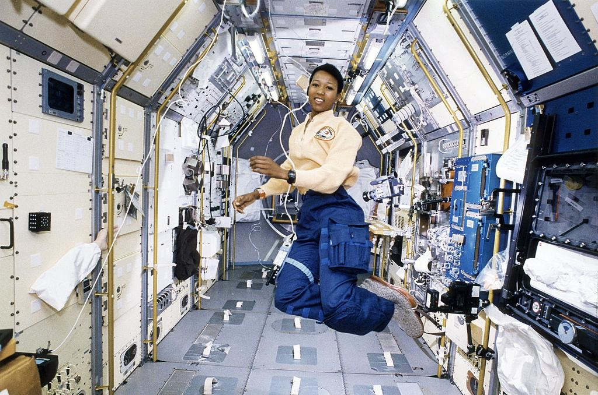

Launch Your Future as an Astrophysicist
Explore the biggest mysteries of the universe—from black holes and distant galaxies to the origins of space and time
Pathway Snapshot
High School Courses | College Majors | Career Roles |
Physics | Astrophysics | Astrophysicist |
AP Physics | Astronomy | Research Scientist |
Algebra II & Pre-Calculus | Physics | Space Science Researcher |
Calculus | Applied Mathematics | Data Scientist (Space & Science) |
Computer Science | Engineering Physics | Observatory Scientist |
Women Who Lead the Way
Katie Mack
Hawking Chair in Cosmology and Science Communication, Perimeter Institute for Theoretical Physics

Photo Credit: J. Adam Huggins for Quanta Magazine
“The universe is wild and beautiful—and understanding it is one of the most exciting things we can do as humans.”
Dr. Katherine (Katie) Mack is an American theoretical astrophysicist and noted science communicator whose work explores the origins, evolution, and fate of the cosmos. She has become one of the most visible public voices in cosmology, known for combining rigorous research with accessible explanations of complex scientific ideas.
Day in the Life
What You Do | Tools & Technologies You Use |
Analyze data from telescopes and satellites | Python, MATLAB, data visualization tools |
Model stars, galaxies, or cosmic events | Supercomputers & simulations |
Read and write scientific research papers | Scientific journals, LaTeX |
Collaborate with global research teams | Zoom, Slack, research databases |
Share discoveries with the public | Presentations, social media, lectures |
Mini-Activity: Try This!
Build Your Own Universe Model
- Use free tools like NASA’s Eyes on the Universe or Stellarium
- Track a planet or constellation over a week
- Write a short “space log” describing what you observe and what questions it raises
Bonus: Try coding a simple gravity simulation using Python or Scratch.
Careers & Resources
Degree Program Finder
Scholarships
- Society of Women Engineers (SWE) Scholarships
- NASA Scholarships & Fellowships
- AAUW STEM Scholarships
Summer Camps & Programs
- NASA High School Aerospace Scholars
- MIT Women’s Technology Program (WTP)
- Space Camp (Advanced Space Academy)
Explore More
- O*NET: https://www.onetonline.org
- Roadtrip Nation: https://roadtripnation.com
You Belong Here
If you love big questions, problem-solving, and discovering how the universe works, astrophysics could be your path. You don’t have to choose between creativity and science—this career needs imagination, coding, math, and storytelling. Space is for everyone, and the universe needs your perspective.
